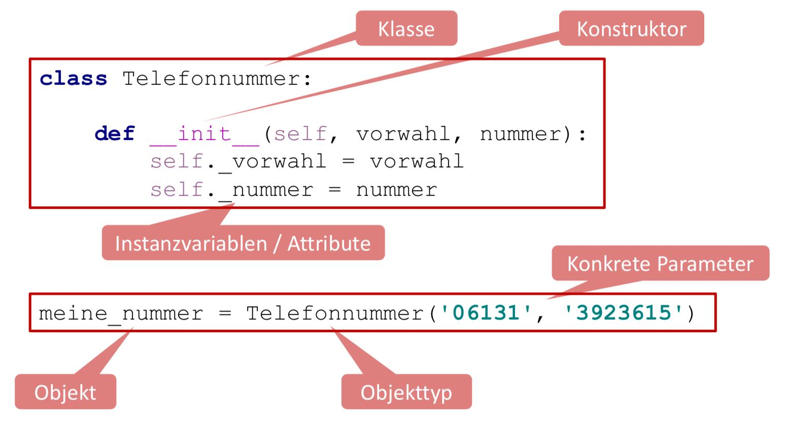
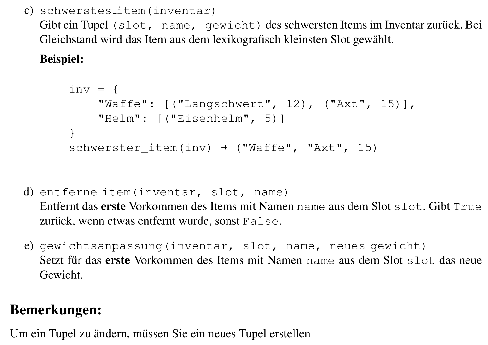
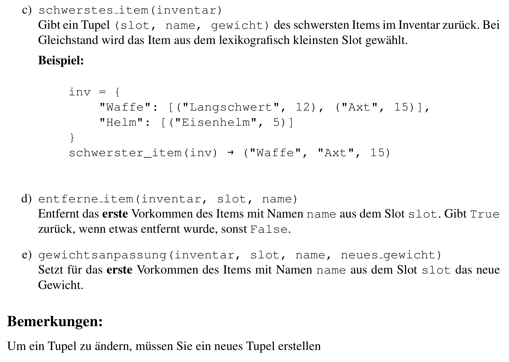
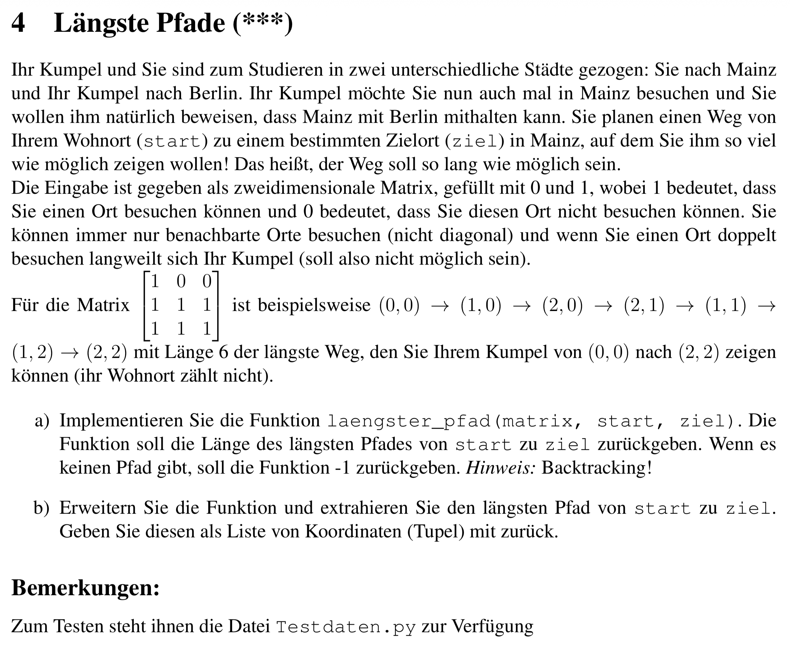
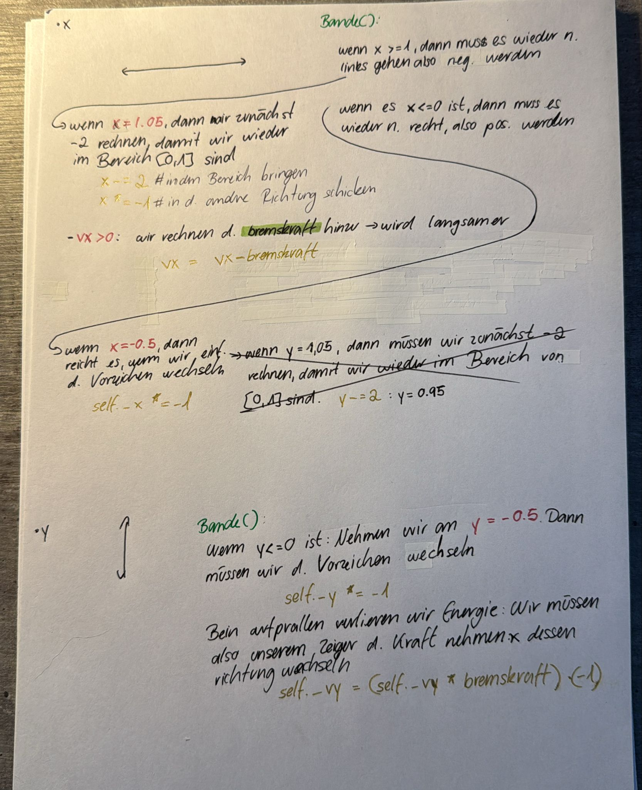

Inhaltsverzeichnis
- Kommandozeilenargumente
- infinet values for max & min
- Altklausuren
Tipps f. d. Klausur:
- wenn ich weiß, wie oft etw. passieren muss = for-Schleife
- wenn ich $\lnot$ weiß, wie oft etw. passieren muss = while-Schleife
- man könnte solch eine Tabelle machen, damit es nicht so kompliziert wird
| Schritt (i) |
Key (Element rechts) |
Liste vor dem Verschieben |
Vergleich im sortierten Teil |
Aktion / Ergebnis |
| 1 |
1 |
[ 9 | 1, 2, 7, 3 ] |
9 > 1 ? Ja. |
9 schiebt nach rechts, 1 wird vorne eingesetzt: [ 1, 9 | 2, 7, 3 ] |
| 2 |
2 |
[ 1, 9 | 2, 7, 3 ] |
9 > 2 ? Ja.
1 > 2 ? Nein. |
9 schiebt nach rechts, 2 stoppt hinter der 1: [ 1, 2, 9 | 7, 3 ] |
| 3 |
7 |
[ 1, 2, 9 | 7, 3 ] |
9 > 7 ? Ja.
2 > 7 ? Nein. |
9 schiebt nach rechts, 7 stoppt hinter der 2: [ 1, 2, 7, 9 | 3 ] |
Kommandozeilenargumente
import sys $\leftarrow$ immer !!!
Wie ü.gibt man Argumente ?
<var> = sys.[i]
import sys
if len(sys.argv) < 3:
print('Bitte geben Sie Liter und die Distanz an!.')
sys.exit()
liter = float(sys.argv[1])
distanz = float(sys.argv[2])
verbrauch = (liter *100)/distanz
print(round(verbrauch,2))
python3 verbracuh.py 45.5 600
7.58
infinet values for max & min
- float('-inf')
- float('inf')
"Call by Value" vs. "Call by Reference"
String
Man kann ein Text nicht ändern !!!
text = "Was machen Sachen"
text[2] = i
-
.upper() $\to$ copy
-
.lower() $\to$ copy
-
.strip(): str $\to$ str
- Entf. Leerzeichen v. Anfang & Ende
-
.split(<elem>): str $\to$ list
-
.replace(<alt>,<neu>): str $\to$ str
-
"<objekt, womit es verbunden werden soll>".join(<liste>): list[str] $\to$ str
liste = ["Was", "machen", "Sachen"]
neue_liste1 = " ".join(liste)
neue_liste2 = ",".join(liste)
print(neue_liste1)
print(neue_liste2)
Was machen Sachen
Was,machen,Sachen
Wie Anzahl Strings zählen ?
<gewinner> = max(<kandidaten>, key=<bewertungs_regel>)
tiere = ['zebra', 'dachs', 'zebra', 'dachs', 'aal']
gewinner = max(sorted(set(tiere)), key=tiere.count)
print(gewinner)
Beispiel 2:
woerter = ["Maus", "Elefant", "Hund", "Ameise"]
kandidaten = sorted(set(woerter))
print(f"kandidaten: {kandidaten}")
gewinner = max(kandidaten, key=len)
print(gewinner)
Beispiel 3:
namen = {1: 'Efe', 2: 'Simge', 3: 'Sude', 4: 'Tülay', 5: 'Ergün', 6: 'Mayla', 7: 'Pepee'}
gewinner = max(sorted(set(namen.values())), key=len)
print(gewinner)
``
```python
import string
<var> = string.ascii_lowercase
<var> = string.ascii_uppercase
<var> = string.ascii_letter
<var> = string.digits
<var> = string.hexdigits
<var> = string.whitespace
Arbeiten mir Pfad
import os
dir = directory (Verzeichnis)
-
<var> = os.getcwd() $\to$ str
- aktuelles Arbeitsverzeichnis
-
<var> = os.chdir(<pfad>)
- wechselt Arbeitsverzeichnis
-
<var> = os.listdir(<pfad>) $\to list
-
<var> = os.isfile(<pfad>)
- Ist ü.gebene Pfad eine Datei ?
-
<var> = os.isdir(<pfad>)
- Ist ü.gebene Pfad ein Ordner ?
-
<var> = os.path.exists(<pfad>)
- exististert Ordner oder Datei ?
Erzeugen löschen & umbenennen:
-
os.mkdir(<pfad>/<Ordner_name>)
- erzeugt einen Ordner am Pfad
os.mkdir('/Volumes/Efes USB/Uni/Semester 6/EiP/Übung für mich selbst/Hallo')
- pfad: /Volumes/Efes USB/Uni/Semester 6/EiP/Übung für mich selbst
- ordner: /Hallo
-
os.makedirs('/Volumes/Efes USB/Uni/Semester 6/EiP/Übung für mich selbst/Hallo/Was/Geht')
- es wird eine Kette an Ordner erstellt

-
os.rmdir(<pfad>)
-
os.remove(<pfad>)
-
os.replace(<alt_name>, <neu_name>)
Listen
Werkzeuge:
-
<liste>.clear():
-
<list>.count(<elem>):
-
<list1>.extend(<liste2>):
- in-place
- Die Liste wird ausgepackt & hinzugefügt ?
-
<list>.index(<elem>, start, end):
-
<list>.insert(<elem>):
-
<list>.reverse():
- in-place
<list>[::-1] = Kopie
-
<list>.sort():
- in-place Sortierung
- sorted(
) = Kopie
-
.pop(<index>):
- dann wird das Element an dieser stelle gelöscht
-
.remove():
- wenn das erste Element, der dem Element in
.remove(<elem>) entspricht, wird entf.
-
.copy():
- wichtig !!!!
- man kopirt nur d. oberste Ebene
liste_a = [10, 20, 30]
liste_b = liste_a
liste_b[0] = 2
Originale Listen:
---------------------------------
Lista A: [10, 20, 30]
Liste B: [10, 20, 30]
V1 Listen:
---------------------------------
Liste_a: [2, 20, 30]
Liste_b: [2, 20, 30]
ID von A: 1834691293696
ID von B: 1834691293696
True
liste_a = [10, 20, 30]
liste_b = liste_a.copy()
liste_b[0] = 2
Originale Listen:
Lista A: [10, 20, 30]
Liste B: [10, 20, 30]
V1 Listen:
Liste_a: [10, 20, 30]
Liste_b: [2, 20, 30]
ID von A: 2152350446080
ID von B: 2152352749696
False
import copy
liste_a = [10, 20, 30]
liste_b = copy.deepcopy(liste_a)
liste_b[0] = 2
Originale Listen:
Lista A: [[1], [3, 8, 8], [9, 6], 7]
Liste B: [[1], [3, 8, 8], [9, 6], 7]
V1 Listen:
ID "OG-Conteiner": 1667841546688
ID "Copy-Conteiner": 1667839716544
False
Wann .append und wann += ?:
.append():
- Wenn ich ein Objekt mit den Klammern hinzufügen möchte
- Bsp.: Ich lege d. gesamte tüte mit den Elementen in den Wagen
- wenn ich nur den Inhalt hinzufügen möchte
- Bsp.: Ich lege nur d. Ware in den Wagen & schmeiße die leere Tüte weg
haupt_liste = [1, 2]
zusatz = [3, 4]
liste_a = [1, 2]
liste_a.append(zusatz)
print(liste_a)
liste_b = [1, 2]
liste_b += zusatz
print(liste_b)
Wie werden mehrdimensionale Listen sortiert ?
- Es wird anhand des ersten Elements sortiert
[11, 7, 9, 8]
[16, 2, 8, 16]
[4, 5, 12, 20]
[10, 17, 2, 12]
---------------------------------------------------------------
[4, 5, 12, 20] 4
[10, 17, 2, 12] 10
[11, 7, 9, 8] 11
[16, 2, 8, 16] 16
[16, 0, 19, 7, 3, 18, 2]
[8, 15, 9, 1, 0, 4, 7]
[3, 14, 10, 19, 20, 20, 5]
[11, 1, 17, 11, 1, 7, 8]
[2, 17, 12, 17, 12, 20, 3]
[2, 16, 16, 18, 7, 4, 0]
[14, 12, 1, 6, 13, 8, 20]
---------------------------------------------------------------
[2, 16, 16, 18, 7, 4, 0] 2
[2, 17, 12, 17, 12, 20, 3] 2
[3, 14, 10, 19, 20, 20, 5] 3
[8, 15, 9, 1, 0, 4, 7] 8
[11, 1, 17, 11, 1, 7, 8] 11
[14, 12, 1, 6, 13, 8, 20] 14
[16, 0, 19, 7, 3, 18, 2] 16
Wie verändert sich meine Liste, wenn ich mit nested-for_schleifen arbeite ?
- Genau die Stelle d. ich verändern möchte, muss ich mit einem Index machen:
lst = [[
[[], [], [], []],
[[], [], [], []],
[[], [], [], []],
[[], [], [], []]
],
[ [[], [], [], []],
[[], [], [], []],
[[], [], [], []],
[[], [], [], []]
],
[
[[], [], [], []],
[[], [], [], []],
[[], [], [], []],
[[], [], [], []]
]]
for i in lst:
for j in i:
for k in range(len(j)):
j[k] = 2
Wie kann ich autom. ein Spielbrett durch gehen & Werte eins. ?
- Def. eine Var. relation aufschrieben, wenn mehrere Var. f. d. Gleiche stehen:
- y = Zeile = m
- x = Spalte = n
Wir müssen d. Spielfeld erst einmal bauen:n = 5
m = 5
spielfeld = [[[]for _ in range(n)]for _ in range(m)]
Zufälliges Verteilen v. Bomben:möglichekeiten = ['', '*']
for zeile in spielfeld:
for spalte in range(len(zeile)):
ausgw_elem = r.choices(möglichekeiten, weights=[60,40], k=1)
zeile[spalte] = ausgw_elem[0]
Wir zählen d. Nachbarnmax_n = n-1
max_m = m-1
for zeile in range(m):
for spalte in range(n):
if spielfeld[zeile][spalte] == '*':
continue
bomben_count = 0
for y in range(-1,2):
for x in range(-1,2):
y_now = zeile + y
x_now = spalte + x
if 0 <= y_now <= max_m and 0 <= x_now <= max_n:
if spielfeld[y_now][x_now] == '*':
bomben_count += 1
spielfeld[zeile][spalte] = bomben_count
Dictionaries
Wie durch dict() iterieren ?:
for key in dict.keys():
for value in dict.values():
for key, value in dict.items()
Wie sortieren ?:
Wie Elemente hinzufügen:
<dic>.update({<key>: <value>})
dic = {3: (3, 'ein'), 4: (2, 'test'), 8: (1, 'beispiel')}
n = 7
k = 3
dic.update({(n,k) : 45})
print(dic)
Wie Hashtabelle einen festen Speicherplatz geben ?:
- unsere Hash-tabelle soll nur 10 Stellen haben: 0 bis 9
def hinzufügen(tabelle:dict, schluessel:int, wert:str)-> dict[int, str]:
if len(tabelle) == 10:
return tabelle
hashwert = (schluessel ** 2 + schluessel - 1) % 10
while hashwert in tabelle:
hashwert = (hashwert - 1) % 10
tabelle[hashwert] = wert
return tabelle
hashtabelle = {}
hinzufügen(hashtabelle, 2, 'wert 1')
hinzufügen(hashtabelle, 5, 'wert 2')
hinzufügen(hashtabelle, 4, 'wert 3')
hinzufügen(hashtabelle, 5, 'wert 4')
- so sieht d. hash-Tabelle aus:
______________________________
Wie sieht die Hastabelle aus ?
______________________________
0 |
1 |
2 |
3 |
4 |
5 | 'wert 1'
6 |
7 | 'wert 4'
8 | 'wert 3'
9 | 'wert 2'
Mit Text arbeiten
Man muss es sich so vorstellen, dass .readlines() unsere Augen sind & wir jede Zeile lesen ! Das heißt, wenn ich etw. hinzufüge, dass ich dann mit den Augen unter d. letzen Zeile bin. Wenn jmd. jzt. fragen würde, was da steht, dann würde ich "nichts" sagen, weil da nichts geschrieben steht. Damit ich lesen kann, muss ich wieder mit den Augen zur ersten Zeile, welches hier mit .seek({index}) geschieht. ES IST GANZ WICHTIG ZU WISSEN, DASS .split(), .strip(), usw. EINEN STRING ZURÜCK GEBEN !!!
Also wenn ich in der Klausur eine Aufgabe bekommen sollte, welches mit einer Datei ist, dann muss ich als ersten gucken, ob ich den gesamten Inhalt als Ganzes brauche, oder ob ich es auch zeilenweise angucken kann.
Wenn ich eine „Textanalyse“ machen muss, also den gesamten Text vor mir gedruckt haben möchte, damit ich da zum Bsp Wörter oder Buchstaben „korrigieren“ möchte, dann benutze ich readlines(). Im Computer ist d. gedruckte Blatt dann eine Liste mit den einzelnen Elementen als String mit \n & \t.
Wenn ich aber zeilenweise abschreiben möchte, v. einem Buch in meinen Heft, dann muss ich .readline() verwenden. Wichtig hierbei ist, dass mein Auge immer einen Zeile weiter geht ! + ich muss dem Computer sagen, dass es etwas n Mal machen soll, weil er dann etwas z.B. nur 1 mal macht
Allgemein:
-
r = read
-
w = write
-
a = append
-
Wie kombinieren?
- bestehende Datei ändern möchte $\to$
'r+'
- neue Datei erstellen & konrollieren möchte $\to$
'w+'
- an bestehende Datei etw. anhängen möchte $\to$
'a+'
Wie Datei öffnen ?:
with open("Probe.txt", 'r') as data:
print(data)
- somit benötige ich kein
var = close() am Ende
.readlines():
with open("Probe.txt", 'r') as data:
f_inhalt = data.readlines()
print(f_inhalt)
-
das nimmt den Inhalt und packt es in eine Liste, wobei jedes Element des Textest ein Element in der gesamten readline Liste ist
-
somit wird mir eine Liste aus den Elementen ausgegeben
-
Textdatei
['1) Papa \n', '2) Mama \n', '3) Efe \n', '4) Sude \n', '5) Simge \n', '6) Pepee \n', '7) Mayla ']
.readline()
.readline() ist so, als ob wir ein Buch haben und ein Heft. Unser Auge guckt im Buch n. d. ersten Zeile und wir schreiben d.as in unser Heft ab. Autom., wenn wir ins Buch gucken, beginnen wir mit d. 2. Zeile & d. schreiben wir ebenso in ins Heft. usw.
Da wir dem Computer alles definieren müssen, müssen wir sagen wie viele solcher Prozesse wir durchmachen möchten, welches hier = 66 mal ist. D.h., dass wir 66 $\times$ d. Buch lesen & abschreiben
with open("Probe.txt", 'r') as data:
f_inhalt = data.readline()
print(f_inhalt)
1) Papa
- wenn ich aber
print(f_inhalt, end=' ') mache, dann wird es ohne den Absatz ausgegeben
1) Papa
Wie đ Zeilen iterieren ?:
- đ d. Iterieren, wird ein Memory-Problem umgangen !</span
with open("Probe.txt", 'r') as data:
for line in data:
print(line, end='')
1) Papa
2) Mama
3) Efe
4) Sude
5) Simge
6) Pepee
Wie Inhalt zu d. Datei hinzufügen ?:
with open("Probe.txt", 'a+') as data:
mayla = '\n7) Mayla'
data.write(mayla)
data.seek(0)
inhalt = data.read()
print(inhalt)
1) Papa
2) Mama
3) Efe
4) Sude
5) Simge
6) Pepee
7) Mayla
- Wie kann man denn direkt einen kompletten langen Text hinzufügen ?
with open("Probe.txt", 'a+') as data:
mayla = str(input(f"Was soll hinzugefügt werden: "))
data.write('\n' + mayla)
data.seek(0)
lines = data.readlines()
for line in lines:
print(line, end="")
1) Papa
2) Mama
3) Efe
4) Sude
5) Simge
6) Pepee
7) Mayla
Wie kann man denn gezielt leere Zeilen entfernen ?:
with open("Probe.txt", 'a+') as data:
data.seek(0)
lines = data.readlines()
for line in lines:
if line.strip() == '':
continue
print(line, end="")
- Somit sagen wir also, wenn wir an eine leere Zeile stoßen, dann einfach ignorieren & mit d. nächsten Zeile weiter machen zu lesen ?
1) Papa
2) Mama
3) Efe
4) Sude
5) Simge
6) Pepee
7) Mayla
1) Papa
2) Mama
3) Efe
4) Sude
5) Simge
6) Pepee
7) Mayla
Wie kann ich denn machen, dass ich jede dritte Zeile oder 4. Zeile lesen möchte ?:
Wie kann man einfach eine neue Datei erstellen ?:
Wie kontrollieren, ob ene Datei bereits existiert ?:
import os
os.path.exists(<pfad>) -> bool
Was ist ein optionaler Parameter ?:
- ein optinaler Parameter ist ein Parameter, dass immer autom, f, eine var, gegesetzt wird, falls hier ichts eingesetzt wird
def begruessung(name="Mensch"):
print("Hallo " + name)
begruessung()
begruessung("Lisa")
"Hallo Mensch"
"Hallo Lisa"
Wie kann man einzelne Zeichen zählen ?:
def letterCount(text, zeichen=string.ascii_letters):
count_collection = []
for letter in zeichen:
count = text.count(letter)
count_collection.append(count)
return count_collection
text = str(input('String: '))
zeichen = str(input('Zeichen: '))
print(letterCount(text, zeichen))
[3, 2, 2]
- $3 \times a,\ 2 \times c,\ 2\times h$
Rekursion
So kann mich sich die Rekursion auch vorstellen.
Bsp.: Fibonacci-Zahlen
Wenn du wissen willst, was der Wert von $F(5)$ ist, gehst du zu Person 5. Da diese d. Antwort $\lnot$ auswendig weiß, ruft sie sofort bei ihren Kollegen in Büro 4 und Büro 3 an und bittet sie um Hilfe. D. Problem bei d. normalen Rekursion ist, dass diese Kollegen wiederum ihre Nachbarn anrufen müssen, was zu unzähligen Telefonaten führt, bei denen dieselben Fragen immer & immer wieder gestellt werden.
Hier kommt unsere Schachtel 📦 ins Spiel, d. im Flur $\forall$ erreichbar steht: das Memo-Dictionary. Bevor eine Person zum Hörer greift, schaut sie erst in diese Schachtel. Liegt dort schon ein Zettel mit dem Ergebnis f. ihr Büro, nimmt sie den Wert einfach heraus & gibt ihn sofort an den Fragesteller weiter. Ist d. Schachtel leer, müssen die Kollegen angerufen werden. Die Einzigen, d. niemals telefonieren müssen, sind d. Personen in Büro 0 und Büro 1. Sie kennen ihre Werte (0 und 1) sofort, legen sie als Erste in d. Schachtel und starten damit d. Kettenreaktion. Sobald eine Person d. Antw. ihrer beiden Kollegen erhalten hat, addiert sie diese, schreibt das neue Ergebnis auf einen Zettel für die Schachtel und liefert die Antwort ab. So wird jede Zahl im Gebäude nur ein einziges Mal wirklich berechnet. ✨
def querSumme(n:str, result:int)->int:
if len(n) == 0:
return result
else:
b = int(n[0])
result += b
return querSumme(n[1:],result)
n = str(input("n: "))
n_lst = []
for i in n:
n_lst.append(i)
result = 0
print(querSumme(n_lst,result))
oder
def quersumme(n: int) -> int:
if n < 10:
return n
return (n % 10) + quersumme(n // 10)
Klassen

Wie kann ich Instanzen beschützen ?:
class ...():
def __init__(self, farbe):
self._farbe = farbe
- man kann es jetzt v. Draußen $\lnot$ anfassen oder verändern !
Build-in Funktionen:
- $a -= b$:
def __isub__(self, other): | Man bracuht d. $\lnot$ wirkl.
Arten v.eigenständigen Funktionen:
- Instanzfunktionen $\to$
self.:
- gehört zum Objekt, aber $\lnot$ zur Klasse:
def mach_etwas(self, ...):
pass
- statische Funktionen $\to$
@staticmethod:
- kein bezug auf Klasse
- d. genau d. Gleiche wie d. funktionale Programmierung, aber halt nur in der Klasse
@staticmethod
def mach_etwas():
pass
- Klassenfunktionen $\to$
classmethod:@classmethod
def mach_etwas(cls):
pass
Reihenfolge der Ausf.:
- Built-in-Funktionen (
__<etw.>__)
- statische Funktionen (
<parameter>)
- Instanzfunktionen (
self)
- Klassenfunktionen (
cls)
Was ist Polymorphismus ?:
- Operationen $\underrightarrow{\ \ \ \ \textcolor{#d6b315}{\text{funktionieren}}\ \ \ \ }$ vers. Datentypen
- Operationen/Funktionen = Gleicher Name $\underrightarrow{\ \ \ \ \textcolor{#d6b315}{\text{aber}}\ \ \ \ }$ unterschiedl. Funktionalität
Was ist Polymorphismus ?:
from abc import ABC, abstractmethod
class Tier(ABC):
@abstractmethod
def laut_geben(self):
pass
@abstractmethod
def bewegen(self):
pass
class Hund(Tier):
def laut_geben(self):
return "Wuff!"
def bewegen(self):
return "Der Hund rennt."
class Fisch(Tier):
def laut_geben(self):
return "Blub..."
def bewegen(self):
return "Der Fisch schwimmt."
Kontrolle v. Objekten (auch mit Vererbung):
class Tier:
pass
class Hund(Tier):
pass
bello = Hund()
print(type(bello) == Tier)
print(isinstance(bello, Tier))
GUI
import tkinter as tk
Was ist root ?:
- d. ist d. hauptfenster, ohne d. stützt alles ab !
Label:
label = tk.Label(root, text="Was geht ?")
Entry:
entry = tk.Entry(root, bd=10)
Text:
text = tk.Text(root, font='Arial')
text.insert(tk.INSERT, "Hallo World)
Spinbox:
spin = tk.Spinbox(master, from_=0, to=10)
button = tk.Button(root, text="messege")
button = tk.Checkbutton(root, text="Option")
button.select()
x = tk.IntVar()
button1 = tk.Radiobtton(root, text="Option 1", variable=x, value=1)
button2 = tk.Radiobtton(root, text="Option 2", variable=x, value=2)
button.select()
Scale:
scale = tk.Scale(from_=0, to=10, resolution=0.1)
scale.set(2.4)
Frame:
tk.Label(master, text='Gude').pack()
frame = tk.Frame(height=5, bd=1, relief=tk SUNKEN)
frame.pack(fill=tk.X)
tk.Label(master, text='Helau').pack()
Frame:
canvas = tk.Canvas(master,
width=200, height=100)
canvas.pack()
canvas.create_line(0, 0, 200, 100)
canvas.create_line(0, 100, 200, 0, fill="red", dash=(4, 4))
canvas.create_oval(75, 25, 125, 75, fill="blue")
Wie erstelle ich das Hauptfenster ?:
Wie programmiere ich die Logik ?:
Fehlerbehandlung ?:
Dreiecke
1) Fläche deines Dreiecks begrenzen:
-
Präsenzblatt
-
Was wir berechnen
-
Also $len(Höhe_{absolut})$ & je n. dem wo wir uns in dem absoluten intervall befinden, wird d. Breite demetsprechend berechnet.
-
$H_{absolut} \in [1,4]$
- wobei $H_{relativ} \in [0,3]$, weil Länge = $4-1 = 3$ (Gesamtlänge)
-
Also, wir haben jzt. d. Basis $B$, aber weil wir aber d. Hälfte d. Basis benötigen = $\frac{B}{2}$
-
d. absolute Höhe $H_{abs}$ & autom. auch $H_{rel}$
-
Die $Gesamthöhe \in [2.5, 5.5]$ & $H_{relativ}$ bewegt sich im Bereich $5.5 - 2.5 = 3 \implies H_{relativ} \in [0,3]$
- random Höhe wählen
- $H_{rel}$ bestimmen
- ${B}$ bestimmen
- x koordinaten Wählen: $r.choice[x_{mid} - w, x_{mid} + w]$.
-
Rampe $B = 2$ & $H_{abs} = 1 \to$ Verhätnis zwischen Höhe zur Länge $= \frac{Höhe}{Länge}$
Tests
Allgemein:
- Anweisungsü.deckung: $C_0$
- Zweigsü.deckung: $C_1$
- Pfadü.deckung: $C_2a, C_2b, C_2c$
- Bedingungsü.deckung: $C_3a, C_3b, C_3c$
Was ist Anweisungsü.deckung: $C_0$:

def vokal_counter(wort:str)-> tuple:
gesamtzahl = 0
vokale = 0
while len(wort) > 0:
gesamtzahl += 1
if wort[0] in "aeiou":
vokale += 1
wort = wort[1:]
return gesamtzahl, vokale
wort = str(input("Wort: ")).lower().replace(" ","")
print(wort)
print(vokal_counter(wort))
Was ist Zweigü.deckung: $C_1$:

def c1_test()->bool:
return vokal_counter('ab') == (2,1)
Was ist Pfadü.deckung: $C_2a$:
Sortieralgorithmen

Lösung:
def insertion_sort(lst: list[int])-> list[int]:
if len(lst) <= 1:
return lst
else:
for i in range(1,len(lst)):
j = i-1
key = lst[i]
while j >= 0 and lst[j] > key:
lst[j+1] = lst[j]
j -=1
lst[j+1] = key
return lst
lst = [8, 4, 3, 9, 7, 1, 4, 2, 4, 7]
print(lst)
print(insertion_sort(lst))
- Wrm. eine for Schleife ?
- Muster erkennen:
- es gibt immer einen Trenner
|
- links v. Trenner $\underrightarrow{\ \ \ \ \textcolor{#d6b315}{\text{im jeden Schritt}}\ \ \ \ }$ länger
- Wir brauchen eine Schleife, d. den Trenner v. vorne bis hinten schiebt.
random
Wie kann ich r.choice() verw. und denen eine Wahrscheinlichkeit geben ?
-
r.choices(<lst>, <wahrscheinlichkeit 1>, <wahrscheinlichkeit 2>, ...) -> list
seq = [[1, 3, 5]]
wahrscheinlichkeit = r.choices(seq,weights = [20, 60, 20], k = 1)
1 = 20%
3 = 60%
5 = 20%
k = die Anzahl der Drehung
- Wenn k = 3 $to$ 3 $\times$ gedreht
- Wenn k = 1 $to$ 1 $\times$ gedreht
<<<<<<< HEAD
=======

Entf. v. Sonderzeichen
import string as s
sonderzeichen = s.punctuation
für symbol in sonderzeichen:
text = text.replace(symbol, "")
text = text.lower().split()
Welche längen gibt es ?
längen = []
for wort in text:
if len(wort) in längen:
continue
else:
längen.append(len(wort))
Wie viele Wörter mit der gleichen Länge gibt es ?
count = 0
for i in range(len(länge)):
for wort in text:
if len(wort) == i:
count += 1
count = 0
D. meiste Wort:
.count()
woerter_sammlung = {}
for wort in wort_liste:
laenge = len(wort)
if laenge in woerter_sammlung:
woerter_sammlung[laenge] =
else:
pass
Storage
1) Papa
2) Mama
3) Efe
4) Sude
5) Simge
6) Pepee
7) Mayla
1) Papa
2) Mama
3) Efe
4) Sude
5) Simge
6) Pepee
random Aufgaben
def mehrdim_liste_sortieren(lst:list[int]) -> list[int]:
for zeile in lst:
for n in range(len(zeile)-1):
min_elem = min(zeile[n:])
min_elem_index = zeile.index(min_elem,n)
zeile[n],zeile[min_elem_index] = zeile[min_elem_index], zeile[n]
for i in range(len(lst)-1):
min_zeile = min(lst[i:])
index_min_zeile = lst.index(min_zeile,i)
lst[i], lst[index_min_zeile] = lst[index_min_zeile],lst[i]
return lst
lst_größe = int(input("Listengröße: "))
lst = [[r.randint(0,20) for _ in range(lst_größe)]for _ in range(lst_größe)]
print(lst)
lst1 = copy.deepcopy(lst)
i_sorted_lst = mehrdim_liste_sortieren(lst)
print(f'Mein Ergebnis: {i_sorted_lst}')
for zeile in lst1:
zeile.sort()
lst1.sort()
print(f'Wie es sein sollte: {lst1}')
if lst1 == i_sorted_lst:
print(True)
else:
print(False)

- Algorithmus $\underrightarrow{\ \ \ \ \textcolor{#d6b315}{\text{besteht}}\ \ \ \ }$ eine Schleife
- Anzahl d. Schrittzahlen: $\sqrt{n}-2$ weil 1 und 2 $\lnot$ enthalten
- $\lim_{n \to \infty} = \sqrt{n}$
- Bew. d. Ü.legenheit:
$$\lim_{n \to \infty} \frac{\sqrt{n}}{n}$$
$$\lim_{n \to \infty} \frac{n^{0.5}}{n^1}$$
$$\lim_{n \to \infty} n^{0.5 - 1} = \lim_{n \to \infty} n^{-0.5}$$
$$\lim_{n \to \infty} \frac{1}{n^{0.5}} = \lim_{n \to \infty} \frac{1}{\sqrt{n}} = 0$$
- Jeder Teiler $d$ einer Zahl $n$ hat einen Partner-Teiler $d'$, sodass $\color{#fc0303}d \cdot d' = n$ gilt.
- Wären beide Teiler $\boldsymbol{>}$ als $\sqrt{n}$, wäre ihr Produkt $d \cdot d'$ automatisch $\boldsymbol{>}$ als $n$ ($\sqrt{n} \cdot \sqrt{n} = n$).
- Mindestens einer d. beiden Teiler muss $\le \sqrt{n}$ sein. Finden wir bis $\sqrt{n}$ keine Zahl, d. $n$ ohne Rest teilt, kann es auch danach keine geben.
import math
def is_prime_number(n: int) -> bool:
while n<0:
print("n muss positiv sein!")
n = int(input("n: "))
if n < 2: return False
for i in range(2, int(math.sqrt(n)) + 1):
if n % i == 0:
return False
return True
n = int(input("n: "))
print(is_prime_number(n))

import random as r
def sum_iterativ(numbers:list[int])->int:
if len(numbers) == 0:
return 0
else:
summe = 0
for i in numbers:
summe += i
return summe
def sum_rekursive(numbers: list[int])->int:
if len(numbers) == 0:
return 0
else:
if len(numbers) == 1:
return numbers[0]
return numbers[0] + sum_rekursive(numbers[1:])
numbers = [r.randint(0,20)for _ in range(3)]
print(numbers)
print(sum_iterativ(numbers))
print(sum_rekursive(numbers))
- number = [5,8,3]
- Schritt 1) 5 + summe[8,3]

import random as r
def berechnen_von_feld_B(n: int, feld_A: list[int])-> list[int]:
feld_B = [[[]for _ in range(n-2)] for _ in range(n-2)]
for i in range(1,n-1):
for j in range(1,n-1):
summe = 0
for y in range(-1,2):
for x in range(-1,2):
ni = i+y
nj = j+x
summe += feld_A[ni][nj]
feld_B[i-1][j-1] = summe
return feld_B
n = int(input('n: '))
feld_A = [[r.randint(1,5)for _ in range(n)] for _ in range(n)]
print(f'Feld A: {feld_A}')
feld_B = berechnen_von_feld_B(n,feld_A)
print(f'Feld B: {feld_B}')
print(20* '-')
for i in feld_A:
print(*i)
for j in feld_B:
print(*j)
Bild hinzufügen
import random as r
def num_in_bereich(num:int)->int:
while 0 > num or num > 3999:
print("Die Zahl muss zwischen 1 und 3999 sein!")
num = int(input("num: "))
return num
def umwandlung_römische_zahl(num:int)->str:
num = num_in_bereich(num)
römische_zahl = ""
symbole = [['M'], ['C','D', 'M'], ['X','L', 'C'], ['I','V','X']]
einheiten = [1000,100,10,1]
n_num = num
index = 0
for reihe in einheiten:
rest = n_num % reihe
ziffer = (n_num - rest) // reihe
n_num = rest
if ziffer <= 0:
index += 1
continue
else:
if ziffer == 9:
römische_zahl += symbole[index][0] + symbole[index][2]
elif 6 <= ziffer <= 8:
ziffer -= 5
element = ziffer * symbole[index][0]
römische_zahl += symbole[index][1] + element
elif ziffer == 5:
römische_zahl += symbole[index][1]
elif ziffer == 4:
römische_zahl += symbole[index][0] + symbole[index][1]
elif 1 <= ziffer <= 3:
element = ziffer * symbole[index][0]
römische_zahl += element
index += 1
return römische_zahl
num = r.randint(1,3999)
print(num)
print(umwandlung_römische_zahl(num))

- Datei öffnen
import string
import os
def erstellen_der_dateien(n:int)->None:
for i in range(1, n+1):
name = f"Verändert{i}.txt"
open(name, 'w').close()
def datei_verändern():
with open("Beispieltext.txt", "r") as f:
inhalt = f.read().strip()
zeilen = inhalt.split("\n\n")
f.seek(0)
anzahl_der_Absätze = len(zeilen)
erstellen_der_dateien(anzahl_der_Absätze)
for i in range(anzahl_der_Absätze):
splitet_list = zeilen[i].split()
for j in range(len(splitet_list)):
if j % 3 == 0:
splitet_list[j] = splitet_list[j].upper()
elif j % 3 == 1:
splitet_list[j] = splitet_list[j].lower()
elif j % 3 == 2:
splitet_list[j] = 'Helau'
datei_i = f"Verändert{i+1}.txt"
with open(datei_i, 'w') as d:
d.write(" ".join(splitet_list))
datei_verändern()
Rekursion
- Punktsumme
- Primzahltest
- Binärstellen zählen
- Ab und aufsteigen
- gerade/ungerade
- High five
Übung 9, 1
-
n = int, Basis
-
p = int, Potenz
-
$S(n,p) = \sum_{k=1}^{n} k^p$
- $S(3,2) = 1^2 + 2^2 + 3^2 = 1 + 4 + 9 = 14$
-
Wenn ich n = 3 habe, dann ist es $3 \to 2 \to 1$ & am Ende dann $1 \to 2 \to 3$
-
p immer gleich !
-
Base case:
def punktsumme_berechnen(n:int, p:int):
wenn n gleich 1 ist:
dann gib mir die 1 zurück
Returne die n**p + punktsumme_berechnen(n-1, p)
-
1 Gruppe soll sich das n nehmen und es potenzieren
-
sie soll der nächsten Abteilung die n-1 geben und die sollen darauf die p potenzieren
-
diese sollen dann das gleiche machen bis eine Abteilung = 1 hat.
-
dannach soll die letzte Abteilung das ergbenis an die Abteilung davor geben und diese Addieren
-
immer so weiter bis wir am Anfang sind.
-
Code:
def punktsumme_berechnen(n:int, p:int) -> int:
if n == 1:
return 1
return n**p + punktsumme_berechnen(n-1,p)
n = int(input("n: "))
p = int(input("p: "))
print(punktsumme_berechnen(n,p))
Korrektur:
def punktsumme_berechnen(n:int, p:int) -> int:
if n == 0:
return 0
return n**p + punktsumme_berechnen(n-1,p)
n = int(input("n: "))
p = int(input("p: "))
print(punktsumme_berechnen(n,p))


- bei $n = 2$ & $3$ haben wir bei
m.floor(n**0.5) $=1$, welches bedeutet, dass $2$ & $3$ nur einen Teiler hat und zwar nur den Teiler $i = 1$, welches bedeutet, dass sie eine Primzahl sind, weil jede Zahl einen Teiler v. 1 hat !
import math as m
def n_größergleich_zwei(n:int)->int:
while n < 2:
print("n muss >= 2 sein!")
n = int(input("n: "))
return n
def primzahltest(n:int, i=2)->bool:
if i > m.floor(n**0.5):
return True
elif i == m.floor(n**0.5):
if n %i == 0:
return False
else:
return True
elif n % i == 0:
return False
else:
return primzahltest(n,i+1)
n_test = int(input("n: "))
n = n_größergleich_zwei(n_test)
print(primzahltest(n))

- direkte Weg, ohne Rekurssion
- habe d. Formel selbst hergeleitet 😋

import math as m
def kontrolle_n(n:int)->int:
while n <= 0:
print('n muss eine positive Zahl & größer als 0 sein!')
n = int(input('n: '))
return n
def direkte_audgabe(n:int)->int:
k = m.log2(n)
return int(k+1)
n_old = int(input('n: '))
n = kontrolle_n(n_old)
print(direkte_audgabe(n))
import math as m
def kontrolle_n(n:int)->int:
while n <= 0:
print('n muss eine positive Zahl & größer als 0 sein!')
n = int(input('n: '))
return n
def binärstellen(n:int)->int:
if n <= 1:
return 1
else:
return 1 + binärstellen(n//2)
def direkte_audgabe(n:int)->int:
k = m.log2(n)
return int(k+1)
n_old = int(input('n: '))
n = kontrolle_n(n_old)
print(direkte_audgabe(n))
print(binärstellen(n))
- Wrm. funktioniert d. ?
- Aufruf:
n=4: return 1 + binärstellen(2)
- "Ich habe hier eine 1, aber ich weiß noch nicht, was das Ergebnis von binärstellen(2) ist. Ich muss warten." ⏳ (Er schreibt sich "1 + ?" auf einen Zettel und legt ihn beiseite.)
- Aufruf:
n=2: return 1 + binärstellen(1)
- "Ich habe noch eine 1, aber ich muss auf das Ergebnis von binärstellen(1) warten."
- Aufruf:
n=1: if n <= 1
Ab- & aufsteigen:
def gerade_ungerade(n:int)-> int:
if n < 1:
return
gerade_ungerade(n-1)
print(n)
if n % 2 == 0:
print('gerade')
else:
print("ungerade")
n = int(input("n: "))
gerade_ungerade(n)
Gerade/Ungerade:
def ab_und_aufsteigen(n:int):
print(n)
if n < 1:
return
ab_und_aufsteigen(n-1)
print(n)
n = 3
ab_und_aufsteigen(n)
def iterativ(n:int):
for i in range(1,n+1):
if i % 5 == 0:
print("High Five!")
else:
print(i)
def recusiv(n:int):
if n < 1:
return
recusiv(n-1)
if n % 5 == 0:
print("High Five !")
else:
print(n)
n = int(input("n: "))
iterativ(n)
recusiv(n)

Ich habe das so verstanden import random as r
import random as r
def loese_suduko(sudoku:list[int]):
for i in range(0,len(sudoku), 9):
zeile = sudoku[i:i+9]
sudoku = [r.randint(-9,0) for _ in range(81)]
loese_suduko(sudoku)
-
Jzt., wenn eine Stelle $= 0$ ist, dann soll ich diese Stelle mit einer Zahl setzten, d. da rein passt, wenn es keine Lösung gibt, dann soll ich sagen, dass es keine Lösung f. dieses Soduko gibt, also wenn eine 9er-Einheit nicht gefunden wurde, sofort abbrechen & sagen, dass man dies nicht lösen kann.
-
Ich finde d. Aufgabe unnormal verwirrend. Ich verstehe nicht, was sie genau v. mir möchten. Also ich habe d. Funktion "def loese_sudoku(sudoku:list[int])->list[int] | str:" & hier bekomme ich ein Sudoku-Feld ü.geben, dass Zahlen zw. $0$ bis $-9$ enthält. D. Stellen, d. eine 0 sind, sind quazi mein leeres Feld, welches ich auffüllen muss. Wenn etwas nicht lösbar ist, dann soll d. Einträge löschen, welches bedeutet, dass ich eine Kopie von diesem Feld benötige.
Brain Storming
import random as r
import copy as c
def loese_suduko(sudoku_og:list[int]):
sudoku = c.deepcopy(sudoku_og)
for i in range(0,len(sudoku), 9):
zeile = sudoku[i:i+9]
print(zeile)
sudoku = [r.randint(-9,0) for _ in range(81)]
loese_suduko(sudoku)
- Ich muss mich zudem immer an $9$ Stellen orientieren, welches ein $3 \times 3$ Feld im Bild ist. D. einzelnen Zahlen muss ich mit abs(zahlen) angucken, welches bedeutet, dass ich durch eine Zeile iterieren muss & gucken muss, welche Zahlen n.

Brainstorming:
- Sonderzeichen entf.
- Welche Wortlängen gibt es
- Was ist d. meiste Wort dieser Wortlänge ?
- Was ist das meine Wort mit dieser Wortlänge ?
Wie entf. ich Sonderzeichen:
Pseudocode:
importiere string als s
sonderzeichen = s.punctuation
zahlen = s.digits
für symbol in sonderzeichen:
Ist symbol in text enhalten:
#ja ?
ersetzte in Text das symbol mit ""
ansonsten:
mache einfach weiter
für zahl in zahlen:
Ist zahl in Text:
ersetzte die zahl in text mit ''
ansonsten:
mache einfach weiter
wandle den text:str in eine liste, indem jedes Wort kleingeschrieben ist und ein Element ist: list[str]
Code:
import string as s
text = 'ein Test, ein Test! ein Beispiel'
sonderzeichen = s.punctuation
zahlen = s.digits
for symbol in sonderzeichen:
text = text.replace(symbol, "")
for zahl in zahlen:
text = text.replace(zahl, "")
text_lst = text.lower().split()
['ein', 'test', 'ein', 'test', 'ein', 'beispiel']
Pseudocode:
#länge noch nicht in der gruppe
#füge länge hinzu und das entsprechende list(wort)
#länge bereits in der gruppe
gruppe = {}
für wort in text_lst:
wenn len(wort) nicht in gruppe:
gruppe[len(wort)] = list(wort)
wenn len(wort) bereits in gruppe:
gruppe[len(wort)].append(wort)
Code:
gruppe = {}
for wort in text_lst:
if len(wort) not in gruppe:
gruppe[len(wort)] = [wort]
else:
gruppe[len(wort)].append(wort)
gruppe: {3: ['ein', 'ein', 'ein'], 4: ['test', 'test'], 8: ['beispiel']}
Welches Wort kommt am meisten vor ?:
Pseudocode:
ergebnis = {}
für laenge, liste in gruppe.items():
anzahl_woerter = len(liste)
meiste_wort = max(set(strings), key=strings.count)
ergebnis[laenge] = list((anzahl_woerter, meiste_wort))
set() $\lnot$ sortiert, wenn wir $max$ machen, dann nimmt es einf. direkt d. Erste, aber dass sollte auch alphabetisch geschehen:
- Wenn 2 Elem. gleiche Anzahl haben, dann müssen wir das nehmen, was als erstes im Alphabet vorkommt.
ergebnis = {}
for laenge, liste in gruppe.items():
anzahl_woerter = len(liste)
meiste_wort = max(sorted(set(liste)), key=liste.count)
ergebnis[laenge] = tuple((anzahl_woerter, meiste_wort))
Code:
ergebnis = {}
for laenge, liste in gruppe.items():
anzahl_woerter = len(liste)
meiste_wort = max(set(strings), key=strings.count)
ergebnis[laenge] = list((anzahl_woerter, meiste_wort))
Fertiger Code
import string as s
def wortlaengenstatistik(text:str)-> dict[int, tuple[int, str]]:
sonderzeichen = s.punctuation
zahlen = s.digits
for symbol in sonderzeichen:
text = text.replace(symbol, "")
for zahl in zahlen:
text = text.replace(zahl, "")
text_lst = text.lower().split()
gruppe = {}
for wort in text_lst:
if len(wort) not in gruppe:
gruppe[len(wort)] = [wort]
else:
gruppe[len(wort)].append(wort)
ergebnis = {}
for laenge, liste in gruppe.items():
anzahl_woerter = len(liste)
meiste_wort = max(sorted(set(liste)), key=liste.count)
ergebnis[laenge] = tuple((anzahl_woerter, meiste_wort))
return ergebnis
text = 'Ein Test und ein test.'
text.strip()
print(wortlaengenstatistik(text))


import random as r
def kontrolle_eingabe(prozent:int, groesse:int)->str|list[None]:
if prozent < 0 or prozent >= 100:
prozent = 'Illegal'
if groesse <= 0:
groesse = 'Illegal'
return prozent, groesse
def wasserdicht(z:int, y:int, x:int, kaese:list[list[list[bool]]], visited:set[tuple[int,int,int]])-> bool:
höhe_z = len(kaese)
höhe_y = len(kaese[0])
höhe_x = len(kaese[0][0])
if z<0 or z>(höhe_z-1) or y<0 or y>(höhe_y-1) or x<0 or x>(höhe_x-1):
return False
elif kaese[z][y][x] != True:
return False
elif tuple((z,y,x)) in visited:
return False
if z == höhe_z-1:
return True
visited.add(tuple((z,y,x)))
richtungen = [(-1,0,0), (1,0,0), (0,1,0), (0,-1,0), (0,0,1), (0,0,-1)]
for nz,ny,nx in richtungen:
z_new,y_new,x_new = z+nz,y+ny,x+nx
result = wasserdicht(z_new, y_new, x_new, kaese, visited)
if result == True:
return True
return False
def erzeuge(prozent:int, groesse:int)->bool:
prozent1, groesse1 = kontrolle_eingabe(prozent, groesse)
if prozent1 == 'Illegal' or groesse1 == 'Illegal':
return []
elem = [True, False]
kaese = [[['' for _ in range(groesse1)]for _ in range(groesse1)]for _ in range(groesse1)]
ausg_elem = r.choices(elem, weights=[prozent1, 100-prozent1], k=1)
for i in kaese:
for j in i:
for k in range(len(j)):
ausg_elem = r.choices(elem, weights=[prozent1,100-prozent1], k=1)
j[k] = ausg_elem[0]
print(kaese)
visited = set()
for b in range(groesse):
for c in range(groesse):
if kaese[0][b][c] == True:
ergebnis = wasserdicht(0, b, c, kaese, visited)
if ergebnis == True:
return False
else:
continue
return True
groesse = int(input("Größe: "))
prozent = int(input("Prozent: "))
print(erzeuge(prozent,groesse))

import string as s
def einlesefunktion(pfad:str)-> dict[str, list[tuple[str, str]]]:
with open(pfad, "r") as f:
zeilen = f.readlines()
buch = {}
for zeile in zeilen:
zeile = zeile.strip()
zeile = zeile.split(",")
name = zeile[0]
nummer_lst = zeile[1].split('/')
nummer = tuple((nummer_lst[0], nummer_lst[1]))
buch.setdefault(name, []).append(nummer)
return buch
def ausgabefunktion(dateiname:str, telefonbuch:dict[str, list[tuple[str, str]]]):
telefonbuch = sorted(telefonbuch.items(), key=lambda x: x[0])
telefonbuch = dict(telefonbuch)
with open(dateiname, "w") as f:
for name, nummer in telefonbuch.items():
formatierte_nummern = []
for vorwahl, tel_num in nummer:
formatierte_nummern.append(f"{vorwahl}/{tel_num}")
alle_nummern_str = ", ".join(formatierte_nummern)
f.write(f"{name}: {alle_nummern_str}\n")
def hinzufügen(telefonbuch:dict):
name = str(input("Name, den sie hinzufügen möchten (Anfangsbuchstaben groß!): ")).strip()
zahlen = s.digits
sonderzeichen = s.punctuation
for zahl in zahlen:
name = name.replace(zahl, "")
for symbol in sonderzeichen:
name = name.replace(symbol, "")
name = name.split(" ")
bearbeitet = []
for i in name:
ersterbuchstabe = i[0].upper()
name_rest = i[1:].lower()
formatierter_name = ersterbuchstabe + name_rest
bearbeitet.append(formatierter_name)
fertiger_name = " ".join(bearbeitet)
nummer = str(input("Nummer in der Form: Vorwahl/Nummer: "))
nummer = nummer.split("/")
if fertiger_name not in telefonbuch.keys():
telefonbuch[fertiger_name] = [(nummer[0],nummer[1])]
else:
telefonbuch[fertiger_name].append(tuple((nummer[0],nummer[1])))
return telefonbuch
def main():
pfad = r"G:\Uni\Semester 6\EiP\Übung für mich selbst\Telefonbuch.csv"
buch = einlesefunktion(pfad)
neues_buch = hinzufügen(buch)
ausgabefunktion("test_ausgabe.txt", neues_buch)
if __name__ == "__main__":
main()


def inventar_hinzufuegen(inventar, slot, item):
- inventar = {}
- slot = str(input("Slot: ")).strip()
- item = (str(input('Gegenstand: ').strip()),(int(input("Gewicht: "))))
d) def entferne(inventar,slot, name)
def entferne_item(inventar:dict[str, list[tuple[str,int]]], slot:str, name:str)->bool:
inventar_keys = [slot for slot, liste in inventar.items()]
if slot not in inventar_keys:
return False
slot_mit_elem = inventar[slot]
for i in range(len(slot_mit_elem)):
if slot_mit_elem[i][0] == name:
slot_mit_elem.pop(i)
inventar[slot]= slot_mit_elem
return True
return False
-
Problem 1:
-
Statt...
inventar_keys = [slot for slot, liste in inventar.items()]
if slot not in inventar_keys:
return False
verwende...
if slot not in inventar:
return False
- Python guckt dann autom. auf d.
keys()
-
Problem 2:
slot_mit_elem.pop(i)
inventar[slot]= slot_mit_elem
return True
- slot_mit_elem = ein Zeiger, d. heißt, wenn ich
slot_mit_elem.pop(i) mache, dann wird autom. auch Inventar geändert
-
finaler code:
def inventar_hinzufuegen(inventar: dict, slot:str, item:tuple[str, int])-> dict[str, list[tuple[str,int]]]:
if slot not in inventar:
inventar[slot] = [item]
else:
inventar[slot].append(item)
return inventar
def gesamtgewicht(inventar:dict[str, list[tuple[str,int]]])-> int:
gesamt_gewicht = 0
for slot,liste in inventar.items():
for elem in liste:
gesamt_gewicht += elem[1]
return gesamt_gewicht
def schwerstes_item(inventar:dict[str, list[tuple[str,int]]])-> tuple[str, str, int]:
ergebnis = ("","", float('-inf'))
for slot, liste in inventar.items():
for elem in liste:
if elem[1] > ergebnis[2]:
ergebnis = (slot, elem[0], elem[1])
elif elem[1] == ergebnis[2]:
if slot < ergebnis[0]:
ergebnis = (slot, elem[0], elem[1])
else:
continue
return ergebnis
def entferne_item(inventar:dict[str, list[tuple[str,int]]], slot:str, name:str)->bool:
if slot not in inventar:
return False
slot_mit_elem = inventar[slot]
for i in range(len(slot_mit_elem)):
if slot_mit_elem[i][0] == name:
slot_mit_elem.pop(i)
return True
return False
def gewichtsanpassung(inventar:dict[str, list[tuple[str,int]]], slot:str, name:str, neues_gewicht:int):
if slot not in inventar:
return False
richtiger_slot = inventar[slot]
for i in range(len(richtiger_slot)):
if richtiger_slot[i][0] == name:
richtiger_slot[i] = (richtiger_slot[i][0], neues_gewicht)
return True
return False
inventar = {}
while True:
frage = str(input("Möchten Sie etwas hinzufügen (j/n) ?: ")).lower()
if frage != "j":
break
slot = str(input("Slot: ")).strip()
item = (str(input('Gegenstand: ').strip()),(int(input("Gewicht: "))))
inventar = inventar_hinzufuegen(inventar, slot, item)
print(inventar)
print(gesamtgewicht(inventar))
print(schwerstes_item(inventar))
while True:
frage = str(input("Möchten Sie etwas entfernen (j/n) ?: ")).lower()
if frage != "j":
break
slot = str(input("Slot: ")).strip()
name = str(input("Name: ")).strip()
print(entferne_item(inventar,slot, name))
while True:
frage = str(input("Möchten Sie das Gewicht ändern (j/n) ?: ")).lower()
if frage != "j":
break
slot = str(input("Slot: ")).strip()
name = str(input("Name: ")).strip()
neues_gewicht = int(input('Neues Gewicht: '))
print(gewichtsanpassung(inventar, slot, name, neues_gewicht))
Was ich gelernt habe:
-
Bei wdh. Abfrage, eine $\infty$ Abfrage erstellen mit while True. In d. Schleife Werte abfragen & Funktion in Schleife ausf
-
for i in dict(): dann ist i autom. = .keys()
-
dict(), wenn ich etw. änder, dann ist es wie bei der Liste, dass wird auch autom. bei d. OG dict() auch geändert

Fetiger Code:
def laengster_pfad(matrix: list[list[int]], start: tuple[int, int], ziel: tuple[int, int]) -> int:
rows = len(matrix)
cols = len(matrix[0])
visited_set = set()
def suchen(y: int, x: int, visited: set) -> int:
if (y, x) == ziel:
return 0
if not (0 <= y < rows and 0 <= x < cols):
return -1
if matrix[y][x] == 0:
return -1
if (y, x) in visited:
return -1
visited.add((y, x))
max_len_ab_hier = -1
richtungen = [(0, 1), (0, -1), (1, 0), (-1, 0)]
for dy, dx in richtungen:
ny, nx = y + dy, x + dx
weg_lange_nachbar = suchen(ny, nx, visited)
if weg_lange_nachbar != -1:
mein_weg = 1 + weg_lange_nachbar
if mein_weg > max_len_ab_hier:
max_len_ab_hier = mein_weg
visited.remove((y, x))
return max_len_ab_hier
start_y, start_x = start
return suchen(start_y, start_x, visited_set)
matrix = [
[
[1,0,0],
[1,1,1],
[1,1,1]
],
[
[1, 0, 1, 1, 1, 1, 0, 1, 1, 1],
[1, 0, 1, 0, 1, 1, 1, 0, 1, 1],
[1, 1, 1, 0, 1, 1, 0, 1, 0, 1],
[0, 0, 0, 0, 1, 0, 0, 1, 0, 0],
[1, 0, 0, 0, 1, 1, 1, 1, 1, 1],
[1, 1, 1, 1, 1, 1, 1, 1, 1, 0],
[1, 0, 0, 0, 1, 0, 0, 1, 0, 1],
[1, 0, 1, 1, 1, 1, 0, 0, 1, 1],
[1, 1, 0, 0, 1, 0, 0, 0, 0, 1],
[1, 0, 1, 1, 1, 1, 0, 1, 0, 0]
],
[
[1, 1, 1, 1, 1, 0, 0, 1, 1, 1],
[0, 1, 1, 1, 1, 1, 0, 1, 0, 1],
[0, 0, 1, 0, 1, 1, 1, 0, 0, 1],
[1, 0, 1, 1, 1, 0, 1, 1, 0, 1],
[0, 0, 0, 1, 0, 0, 0, 1, 0, 1],
[1, 0, 1, 1, 1, 0, 0, 1, 1, 0],
[0, 0, 0, 0, 1, 0, 0, 1, 0, 1],
[0, 1, 1, 1, 1, 1, 1, 1, 0, 0],
[1, 1, 1, 1, 1, 0, 0, 1, 1, 1],
[0, 0, 1, 0, 0, 1, 1, 0, 0, 1]
],
[
[1, 1, 1, 1, 1, 0, 0, 1, 1, 1],
[0, 1, 1, 1, 1, 1, 0, 1, 0, 1],
[0, 0, 1, 0, 1, 1, 1, 0, 0, 1],
[1, 0, 1, 1, 1, 0, 1, 1, 0, 1],
[0, 0, 0, 1, 0, 0, 0, 1, 0, 1],
[1, 0, 1, 1, 1, 0, 0, 1, 1, 0],
[0, 0, 0, 0, 1, 0, 0, 1, 0, 1],
[0, 1, 1, 1, 1, 1, 1, 1, 0, 0],
[1, 1, 1, 1, 1, 0, 0, 1, 1, 1],
[0, 0, 1, 0, 0, 1, 1, 0, 0, 1]
]
]
start_ziel = [[(0,0),(2,2)],[(0,0),(5,7)],[(9,8),(0,0)], [(0,0), (8,3)]]
ergebnis = [6, 22, -1, 29]
for i in range(0,4):
print(laengster_pfad(matrix[i], start_ziel[i][0], start_ziel[i][1]))
Klassen
class Pizza():
def __init__(self, name):
self.name = name
self.ist_gebacken = False
self.moegliche_zutaten = {"tomaten", "käse", "salami", "ananas"}
self.belag = set()
def backen(self):
if self.ist_gebacken:
return False
self.ist_gebacken = True
return True
def belegen(self, neue_zutaten_liste):
if self.ist_gebacken:
print("Fehler: Pizza ist schon gebacken!")
return False
for zutat in neue_zutaten_liste:
if zutat not in self.moegliche_zutaten:
print(f"Fehler: Wir haben kein {zutat}!")
return False
for zutat in neue_zutaten_liste:
self.belag.add(zutat)
return True
class ItalienischePizza(Pizza):
def __init__(self, name):
super().__init__(name)
self.wurde_gewirbelt = False
def wirbeln(self):
self.wurde_gewirbelt = True
print("Der Teig fliegt durch die Luft! 🌪️")
def backen(self):
if not self.wurde_gewirbelt:
print("Mamma Mia! Erst wirbeln!")
return False
return super().backen()
def belegen(self, neue_zutaten_liste):
if "ananas" in neue_zutaten_liste:
print("Sakrileg! Keine Ananas auf italienische Pizza! 🚫🍍")
return False
return super().belegen(neue_zutaten_liste)
meine_pizza = ItalienischePizza("Luigi Speciale")
while True:
eingabe = input("\n(b)elegen, (w)irbeln, (o)fen/backen, (z)eigen, (e)nde: ").lower()
if eingabe == "e":
break
elif eingabe == "b":
zutaten_input = input("Zutaten (mit Komma getrennt): ").lower().split(",")
zutaten_sauber = [z.strip() for z in zutaten_input]
if meine_pizza.belegen(zutaten_sauber):
print("Erfolgreich belegt!")
elif eingabe == "w":
meine_pizza.wirbeln()
elif eingabe == "o":
if meine_pizza.backen():
print("Pizza ist fertig gebacken! 🍕🔥")
else:
print("Backen hat nicht geklappt (siehe Fehler oben).")
elif eingabe == "z":
print(f"Pizza: {meine_pizza.name}")
print(f"Belag: {meine_pizza.belag}")
print(f"Zustand: {'Gebacken' if meine_pizza.ist_gebacken else 'Roh'}")
GUi
import tkinter as tk
from tkinter import messagebox
import random as r
class GUI(tk.Tk):
def __init__(self):
super().__init__()
self.wurzel = tk.DoubleVar()
self.quadrat = tk.DoubleVar()
self.text = tk.Text(self, font='Arial')
self.button = tk.Button(text='Berechne', command=self.berechnen)
self.text.pack(anchor="w")
self.button.pack(anchor='ne')
tk.Label(textvariable=self.wurzel).pack()
tk.Label(textvariable=self.quadrat).pack()
def berechnen(self):
num = (self.text.get("1.0", "end-1c"))
num = float(num)
if num < 0:
messagebox.showerror("Nur positive Zahlen !!!", "Bitte geben Sie nur positive Zahlen ein,.")
self.wurzel.set(0.0)
self.quadrat.set(0.0)
else:
self.wurzel.set(round(float(num)**0.5, 2))
self.quadrat.set(round(float(num)**2, 2))
class GUI2(tk.Tk):
def __init__(self):
super().__init__()
self.button = tk.Button(text='Button').pack(anchor="ne")
self.x = tk.IntVar()
self.option1 = tk.Radiobutton(text="Option 1",variable=x, value=1)
self.option2 = tk.Radiobutton(text="Option 2", variable=x, value=2)
self.text = tk.Text()
self.option1.pack(anchor="nw")
self.option2.pack(anchor="nw")
self.option1.select()
self.option2.select()
self.text.pack(anchor='s', fill='x', expand=True)
def __init__(self):
super().__init__()
self.x = tk.IntVar()
self.opt1 = tk.Radiobutton(text='Option 1', variable=self.x, value=1, bg="yellow")
self.opt2 = tk.Radiobutton(text='Option 2', variable=self.x, value=2, bg="yellow")
self.button = tk.Button(text="Button")
self.text = tk.Text()
self.columnconfigure(0, weight=1)
self.columnconfigure(1, weight=0)
self.rowconfigure(0)
self.rowconfigure(1)
self.rowconfigure(2, weight=1)
self.button.grid(row=0, column=1, sticky="ne")
self.opt1.grid(row= 0, column=0, sticky="w")
self.opt2.grid(row=1, column=0, sticky="w")
self.text.grid(columnspan=2, row=3, sticky="nesw")
self.opt1.select()
class GUI3(tk.Tk):
def __init__(self):
super().__init__()
self.text_eingabe = tk.Text()
self.gemischter_text = tk.StringVar()
self.label = tk.Label(self, textvariable=self.gemischter_text)
self.text_eingabe.grid(row=0)
self.label.grid(row=1)
self.text_eingabe.bind("<KeyRelease>", self.shuffle_text)
def shuffle_text(self, event):
if event.char.isalnum():
inhalt = self.text_eingabe.get("1.0", "end-1c")
buchstaben_liste = list(inhalt)
gemischt = r.sample(buchstaben_liste, len(buchstaben_liste))
ergebnis = "".join(gemischt)
self.gemischter_text.set(ergebnis)
if __name__ == "__main__":
app = GUI3()
app.geometry("500x500")
app.title("aepeessla first GUi")
app.mainloop()
Ballsimmulation:
-
wir verw. unsere Tochterklasse class Schwerkraft():, um d. Eigenschaften unserer Mutterklasse zu modifizieren
-
D. Mutterklasse ist in einer anderen Python Datei $\to$ wir müssen es als Modul importieren
import Ball as b
class Schwerkraft(b.Ball):
def __init__(self, x, y, farbe):
super().__init__(x, y, farbe)
pass
-
Wir müssen immer in unserer Hauptklasse ein self bei __init__ hinzufügen
- bei
super().__init__()bracuhen wir d. $\lnot$, weil es Python autom. macht
- Wichtig !!!
super() muss immer in einer Funktion drin sein !!!
-
Wir berechnen d. Bewegung & schicken es zu unserem Kontrolleur bande(). Hier wird dann geguckt, ob wir uns an einem Rand befinden
D. Bande:
- bei
self._y ist es nur der Boden, den wir gucken müssen
Wenn der Ball auf den Boden trifft:
wechsel den Vorzeichen von y
vy = (vy * die Bremse(bremskraft)) * (-1)
import Ball as b
import color
import stddraw as draw
class Schwerkraft(b.Ball):
ball_anzahl = 0
anziehungskraft = 0.05
bremskraft = 0.80
def __init__(self, x, y, farbe):
super().__init__(x, y, farbe)
pass
Schwerkraft.ball_anzahl += 1
def bande(self):
if self._y <= 0:
if abs(self._vy) < 0.05:
self._y = 0
self._vy = 0
else:
self._y = abs(self._y)
self._vy = abs(self._vy) * Schwerkraft.bremskraft
if self._x >= 1:
self._x = 2 - self._x
self._vx = -abs(self._vx) * Schwerkraft.bremskraft
elif self._x <= 0:
self._x = abs(self._x)
self._vx = abs(self._vx) * Schwerkraft.bremskraft
def bewegen(self):
if self._y > 0.001:
self._vy -= Schwerkraft.anziehungskraft
else:
self._vx *= 0.99
if abs(self._vx) < 0.005:
self._vx = 0
super().bewegen()
def __str__(self):
return f"{Schwerkraft.bremskraft}"
ball1 = Schwerkraft(0.3, 1, color.RED)
ball2 = Schwerkraft(0.5, 0.6, color.YELLOW)
print(Schwerkraft.ball_anzahl)
while not draw.hasNextKeyTyped():
ball1.bewegen()
ball2.bewegen()
ball1.anzeigen()
ball2.anzeigen()
draw.show(35)
draw.clear()

Altklausuren
Reserwierte Key Wörter:
False, None, True, and, as, assert, async, await, break, class, continue, def, del, elif, else, except, finally, for, from, global, if, import, in, is, lambda, nonlocal, not, or, pass, raise, return, try, while, with, yield